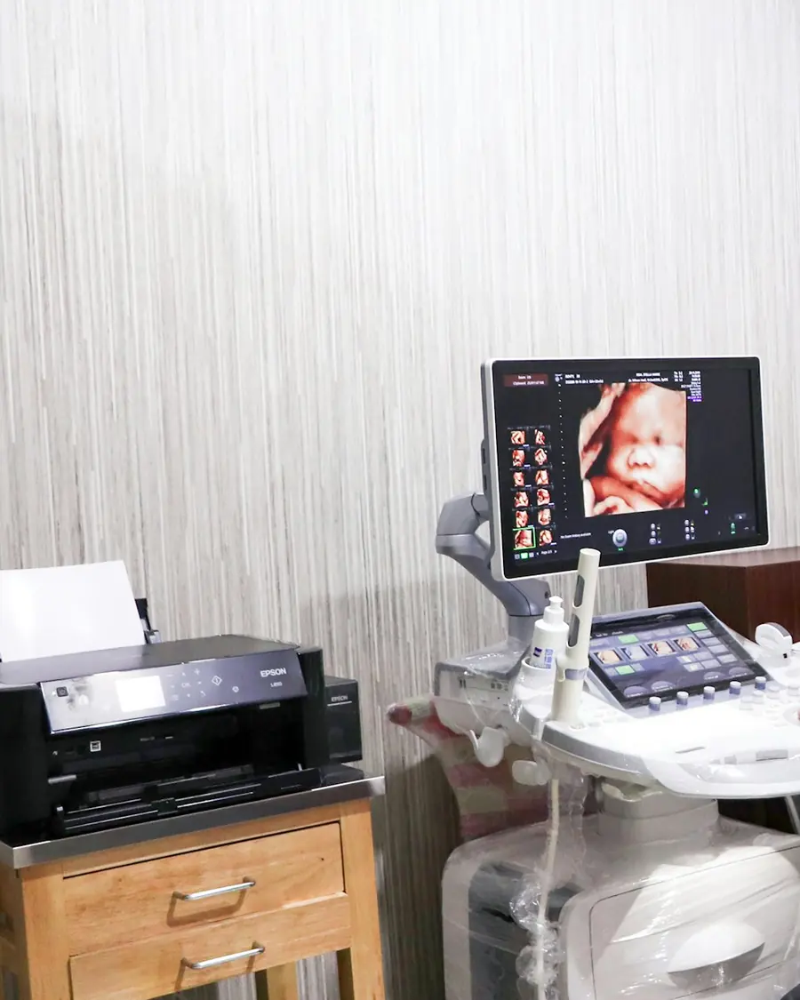

Con cita previa, de lunes a sábado
Ginecología y obstetricia · Ciudad de Guatemala
Salud de la mujer, con <em>calma</em> y cercanía
Control prenatal, ultrasonido 4D/5D y salud ginecológica en cada etapa de su vida. Atención con cita previa, con tiempo para sus preguntas.
- Ultrasonido 4D/5D
- Atención con cita previa
- Aceptamos seguros médicos

Servicios
Ginecología y obstetricia
Atención ginecológica y obstétrica en un mismo consultorio, con ultrasonido propio y un seguimiento cercano en cada etapa.
Control prenatal
Seguimiento de su embarazo desde la primera consulta, con ultrasonido y orientación en cada etapa.
El control prenatal permite acompañar la salud de la madre y el crecimiento del bebé durante todo el embarazo. En cada cita se revisan su presión, su peso y la evolución del embarazo. La doctora le indica los exámenes y ultrasonidos que corresponden a cada trimestre. Cuando se acerca la fecha, la doctora coordina con usted el hospital donde será atendido el parto.Ultrasonido obstétrico 4D/5D
Estudio en tiempo real que permite ver al bebé con detalle y compartir el momento con su familia.
El ultrasonido 4D/5D muestra imágenes tridimensionales del bebé en movimiento. Es un estudio sin radiación. Suele realizarse entre las semanas 26 y 32, cuando la posición del bebé lo permite. La doctora le confirmará el momento adecuado según su control. Al terminar, recibe imágenes digitales y un informe del estudio. Pueden acompañarle hasta tres personas.Control ginecológico anual
Revisión preventiva una vez al año, con examen ginecológico, revisión de mamas y ultrasonido si se requiere.
El control ginecológico anual ayuda a cuidar su salud aunque no tenga molestias. Incluye la conversación sobre su historia clínica, el examen ginecológico y de mamas y, según su edad y antecedentes, el papanicolaou y el ultrasonido pélvico. Es también un buen momento para consultar sobre cambios en su ciclo, la menopausia o cualquier otra duda.
Ubicación
Contáctenos
Escríbanos o llámenos para agendar una cita, consultar precios o resolver sus dudas. Le respondemos en horario de atención.
- DirecciónDirección de ejemplo, Zona 10, Ciudad de Guatemala (se abre en una pestaña nueva)
- Teléfonos5619‑2730 Planta
- Correoinfo@teradevsgt.com
- HorarioLunes a viernes 9:00–17:00 · Sábado 8:00–12:00
Envíenos un mensaje
Por su privacidad, no incluya diagnósticos, resultados ni otros datos clínicos en este formulario.